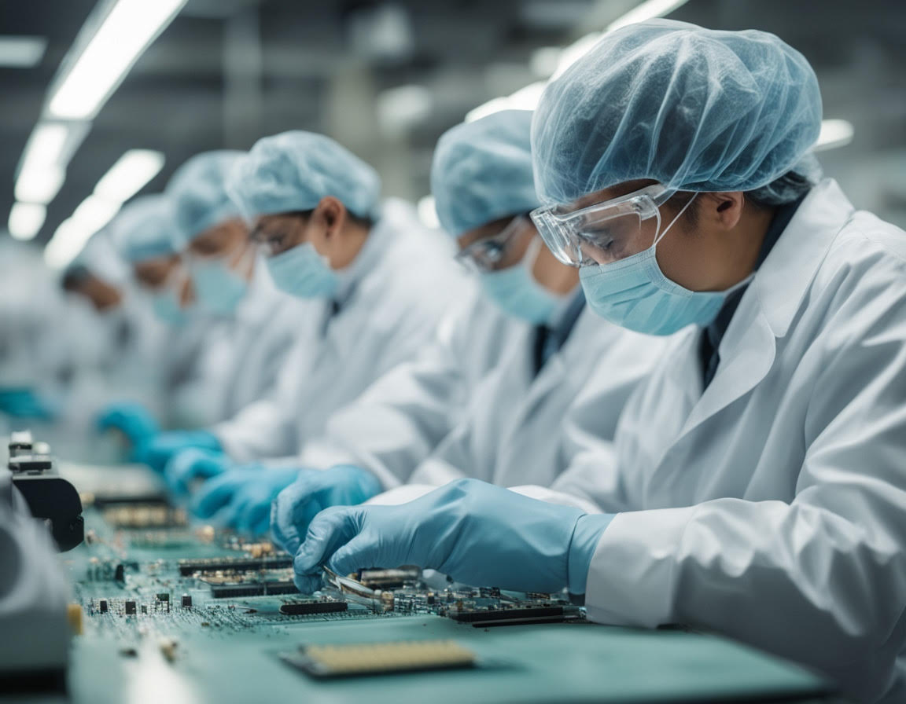

O Zerograf
Strona Zerograf to firma zajmująca się najnowszą technologią, mikrochipami w mózgu, komputerami, bioinżynierią i najnowszym sprzętem. Naszą misją jest wprowadzenie przyszłości do teraźniejszości poprzez innowacyjne rozwiązania technologiczne.
O naszym zespole
Nasz zespół składa się z wybitnych naukowców i uczonych, którzy dzień w dzień pracują nad tym, by ulepszyć dzisiejsze technologie i stworzyć nowe. Wspólnie dążymy do przełomowych odkryć, które zmienią świat.

O szefie
Firma została założona 12 lipca 2024 roku przez naszego szefa Jakuba Domanskiego, który miał na celu pomóc wszystkim ludziom w potrzebie i ułatwić życie codzienne. Jego wizja i determinacja napędzają nasze innowacje i rozwój.
Nasz kanał na YouTube
Jeśli chcesz śledzić nasze najnowsze postępy, kliknij link poniżej:
Sprawdź nasz kanał na YouTube: @ZeroGraf